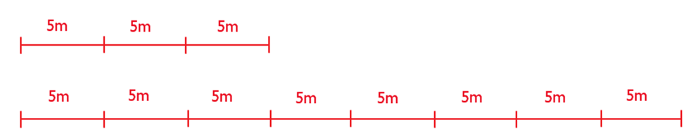

<!DOCTYPE html>
<html xmlns="http://www.w3.org/1999/xhtml" lang="en"></html>
  <head>
    <meta charset="utf-8" />
    <meta name="viewport" content="width=device-width, initial-scale=1.0" />
<title>Час 11 - Еуклидов алгоритам &#8212; Programimi i një pajisje Micro:bit në MakeCode </title>
    <link rel="stylesheet" href="_static/pygments.css" type="text/css" />
    <link rel="stylesheet" href="_static/basic.css" type="text/css" />
    <link rel="stylesheet" type="text/css" href="_static/activecode.css" />
    <link rel="stylesheet" type="text/css" href="_static/codemirror.css" />
    <link rel="stylesheet" type="text/css" href="_static/clickable.css" />
    <link rel="stylesheet" type="text/css" href="_static/pytutor.css" />
    <link rel="stylesheet" type="text/css" href="_static/modal-basic.css" />
    <link rel="stylesheet" type="text/css" href="_static/datafile.css" />
    <link rel="stylesheet" type="text/css" href="_static/dragndrop.css" />
    <link rel="stylesheet" type="text/css" href="_static/fitb.css" />
    <link rel="stylesheet" type="text/css" href="_static/matrixeq.css" />
    <link rel="stylesheet" type="text/css" href="_static/parsons.css" />
    <link rel="stylesheet" type="text/css" href="_static/lib/prettify.css" />
    <link rel="stylesheet" type="text/css" href="_static/poll.css" />
    <link rel="stylesheet" type="text/css" href="_static/showEval.css" />
    <link rel="stylesheet" type="text/css" href="_static/tabbedstuff.css" />
    <link rel="stylesheet" type="text/css" href="https://stackpath.bootstrapcdn.com/bootstrap/4.2.1/css/bootstrap.min.css" />
    <link rel="stylesheet" type="text/css" href="_static/video.css" />
    <link rel="stylesheet" type="text/css" href="_static/webgldemo.css" />
    <link rel="stylesheet" type="text/css" href="_static/webglinteractive.css" />
    <link rel="stylesheet" type="text/css" href="_static/karel.css" />
    <link rel="stylesheet" type="text/css" href="_static/notes.css" />
    <link rel="stylesheet" type="text/css" href="_static/simanim.css" />
    <link rel="stylesheet" type="text/css" href="_static/pycode.css" />
    <link rel="stylesheet" type="text/css" href="_static/p5js.css" />
    <link rel="stylesheet" type="text/css" href="_static/gallery.css" />
    <link rel="stylesheet" type="text/css" href="https://stackpath.bootstrapcdn.com/bootstrap/4.2.1/css/bootstrap.min.css" />
    <link rel="stylesheet" type="text/css" href="_static/video.css" />
    <link rel="stylesheet" href="_static/user-highlights.css" type="text/css" />
    <link rel="stylesheet" href="https://use.fontawesome.com/releases/v5.1.1/css/all.css" type="text/css" />
    <link rel="stylesheet" href="_static/bootstrap-4.0.0-dist/css/bootstrap.min.css" type="text/css" />
    <link rel="stylesheet" href="_static/flatly.min.css" type="text/css" />
    <link rel="stylesheet" href="_static/petlja-runestone.css" type="text/css" />
    <script id="documentation_options" data-url_root="./" src="_static/documentation_options.js"></script>
    <script type="text/javascript" src="_static/runestonebase.js"></script>
    <script type="text/javascript" src="_static/jquery.js"></script>
    <script type="text/javascript" src="_static/underscore.js"></script>
    <script type="text/javascript" src="_static/doctools.js"></script>
    <script type="text/javascript" src="_static/language_data.js"></script>
    <script type="text/javascript" src="_static/jquery.highlight.js"></script>
    <script type="text/javascript" src="_static/bookfuncs.js"></script>
    <script type="text/javascript" src="_static/codemirror.js"></script>
    <script type="text/javascript" src="_static/xml.js"></script>
    <script type="text/javascript" src="_static/css.js"></script>
    <script type="text/javascript" src="_static/python.js"></script>
    <script type="text/javascript" src="_static/htmlmixed.js"></script>
    <script type="text/javascript" src="_static/javascript.js"></script>
    <script type="text/javascript" src="_static/jquery_i18n/CLDRPluralRuleParser.js"></script>
    <script type="text/javascript" src="_static/jquery_i18n/jquery.i18n.js"></script>
    <script type="text/javascript" src="_static/jquery_i18n/jquery.i18n.messagestore.js"></script>
    <script type="text/javascript" src="_static/jquery_i18n/jquery.i18n.fallbacks.js"></script>
    <script type="text/javascript" src="_static/jquery_i18n/jquery.i18n.language.js"></script>
    <script type="text/javascript" src="_static/jquery_i18n/jquery.i18n.parser.js"></script>
    <script type="text/javascript" src="_static/jquery_i18n/jquery.i18n.emitter.js"></script>
    <script type="text/javascript" src="_static/jquery_i18n/jquery.i18n.emitter.bidi.js"></script>
    <script type="text/javascript" src="_static/activecode-i18n.en.js"></script>
    <script type="text/javascript" src="_static/skulpt.min.js"></script>
    <script type="text/javascript" src="_static/skulpt-stdlib.js"></script>
    <script type="text/javascript" src="_static/activecode.js"></script>
    <script type="text/javascript" src="_static/clike.js"></script>
    <script type="text/javascript" src="_static/timed_activecode.js"></script>
    <script type="text/javascript" src="_static/animationbase.js"></script>
    <script type="text/javascript" src="_static/mchoice.js"></script>
    <script type="text/javascript" src="_static/timedmc.js"></script>
    <script type="text/javascript" src="_static/timed.js"></script>
    <script type="text/javascript" src="_static/mchoice-i18n.en.js"></script>
    <script type="text/javascript" src="_static/clickable.js"></script>
    <script type="text/javascript" src="_static/timedclickable.js"></script>
    <script type="text/javascript" src="_static/d3.v2.min.js"></script>
    <script type="text/javascript" src="_static/jquery.ba-bbq.min.js"></script>
    <script type="text/javascript" src="_static/jquery.jsPlumb-1.3.10-all-min.js"></script>
    <script type="text/javascript" src="_static/pytutor.js"></script>
    <script type="text/javascript" src="_static/codelens.js"></script>
    <script type="text/javascript" src="_static/datafile.js"></script>
    <script type="text/javascript" src="_static/dragndrop.js"></script>
    <script type="text/javascript" src="_static/timeddnd.js"></script>
    <script type="text/javascript" src="_static/dragndrop-i18n.en.js"></script>
    <script type="text/javascript" src="_static/fitb.js"></script>
    <script type="text/javascript" src="_static/timedfitb.js"></script>
    <script type="text/javascript" src="_static/fitb-i18n.en.js"></script>
    <script type="text/javascript" src="_static/matrixeq.js"></script>
    <script type="text/javascript" src="_static/lib/prettify.js"></script>
    <script type="text/javascript" src="_static/lib/hammer.min.js"></script>
    <script type="text/javascript" src="_static/parsons.js"></script>
    <script type="text/javascript" src="_static/parsons-i18n.en.js"></script>
    <script type="text/javascript" src="_static/timedparsons.js"></script>
    <script type="text/javascript" src="_static/poll.js"></script>
    <script type="text/javascript" src="_static/reveal.js"></script>
    <script type="text/javascript" src="_static/shortanswer.js"></script>
    <script type="text/javascript" src="_static/timed_shortanswer.js"></script>
    <script type="text/javascript" src="_static/showEval.js"></script>
    <script type="text/javascript" src="_static/tabbedstuff.js"></script>
    <script type="text/javascript" src="_static/runestonevideo.js"></script>
    <script type="text/javascript" src="_static/webglinteractive.js"></script>
    <script type="text/javascript" src="_static/FileSaver.min.js"></script>
    <script type="text/javascript" src="_static/Blob.js"></script>
    <script type="text/javascript" src="_static/karelCorner.js"></script>
    <script type="text/javascript" src="_static/karelRobot.js"></script>
    <script type="text/javascript" src="_static/karelWorld.js"></script>
    <script type="text/javascript" src="_static/karelRobotDrawer.js"></script>
    <script type="text/javascript" src="_static/karelUI.js"></script>
    <script type="text/javascript" src="_static/karel.js"></script>
    <script type="text/javascript" src="_static/karel-i18n.en.js"></script>
    <script type="text/javascript" src="_static/notes.js"></script>
    <script type="text/javascript" src="_static/pygamelib-init.js"></script>
    <script type="text/javascript" src="_static/blockly/blockly_compressed.js"></script>
    <script type="text/javascript" src="_static/blockly/blocks_compressed.js"></script>
    <script type="text/javascript" src="_static/blockly/python_compressed.js"></script>
    <script type="text/javascript" src="_static/blockly/msg-sr.js"></script>
    <script type="text/javascript" src="_static/blockpy/utilities.js"></script>
    <script type="text/javascript" src="_static/blockpy/python_errors.js"></script>
    <script type="text/javascript" src="_static/blockpy/ast_node_visitor.js"></script>
    <script type="text/javascript" src="_static/blockpy/abstract_interpreter.js"></script>
    <script type="text/javascript" src="_static/blockpy/pytifa.js"></script>
    <script type="text/javascript" src="_static/blockpy/abstract_interpreter_definitions.js"></script>
    <script type="text/javascript" src="_static/blockpy/python_to_blockly.js"></script>
    <script type="text/javascript" src="_static/blockpy/imported.js"></script>
    <script type="text/javascript" src="_static/blockpy/blocks/class.js"></script>
    <script type="text/javascript" src="_static/blockpy/blocks/comment.js"></script>
    <script type="text/javascript" src="_static/blockpy/blocks/comprehensions.js"></script>
    <script type="text/javascript" src="_static/blockpy/blocks/dict.js"></script>
    <script type="text/javascript" src="_static/blockpy/blocks/if.js"></script>
    <script type="text/javascript" src="_static/blockpy/blocks/io.js"></script>
    <script type="text/javascript" src="_static/blockpy/blocks/lists.js"></script>
    <script type="text/javascript" src="_static/blockpy/blocks/sets.js"></script>
    <script type="text/javascript" src="_static/blockpy/blocks/loops.js"></script>
    <script type="text/javascript" src="_static/blockpy/blocks/parking.js"></script>
    <script type="text/javascript" src="_static/blockpy/blocks/tuple.js"></script>
    <script type="text/javascript" src="_static/blockpy/blocks/turtles.js"></script>
    <script type="text/javascript" src="_static/blockpy/blocks/text.js"></script>
    <script type="text/javascript" src="_static/blockpy-modal.js"></script>
    <script type="text/javascript" src="_static/simanim.js"></script>
    <script type="text/javascript" src="https://cdn.jsdelivr.net/pyodide/v0.16.1/full/pyodide.js"></script>
    <script type="text/javascript" src="_static/pycode.js"></script>
    <script type="text/javascript" src="//toolness.github.io/p5.js-widget/p5-widget.js"></script>
    <script type="text/javascript" src="_static/p5js.js"></script>
    <script type="text/javascript" src="_static/gallery.js"></script>
    <script type="text/javascript" src="_static/petljavideo.js"></script>
    <script type="text/javascript" src="_static/mchoice-i18n.sr-Cyrl.js"></script>
    <script type="text/javascript" src="_static/mchoice-i18n.sr.js"></script>
    <script type="text/javascript" src="_static/mchoice-i18n.sr-Latn.js"></script>
    <script type="text/javascript" src="_static/dragndrop-i18n.sr-Cyrl.js"></script>
    <script type="text/javascript" src="_static/dragndrop-i18n.sr.js"></script>
    <script type="text/javascript" src="_static/dragndrop-i18n.sr-Latn.js"></script>
    <script type="text/javascript" src="_static/fitb-i18n.sr-Cyrl.js"></script>
    <script type="text/javascript" src="_static/fitb-i18n.sr.js"></script>
    <script type="text/javascript" src="_static/fitb-i18n.sr-Latn.js"></script>
    <script type="text/javascript" src="_static/parsons-i18n.sr-Cyrl.js"></script>
    <script type="text/javascript" src="_static/parsons-i18n.sr.js"></script>
    <script type="text/javascript" src="_static/parsons-i18n.sr-Latn.js"></script>
    <script type="text/javascript" src="_static/activecode-i18n.sr-Cyrl.js"></script>
    <script type="text/javascript" src="_static/activecode-i18n.sr.js"></script>
    <script type="text/javascript" src="_static/activecode-i18n.sr-Latn.js"></script>
    <script type="text/javascript" src="_static/jquery-ui-1.10.3.custom.min.js"></script>
    <script type="text/javascript" src="_static/jquery-fix.js"></script>
    <script type="text/javascript" src="_static/bootstrap-4.0.0-dist/js/bootstrap.min.js"></script>
    <script type="text/javascript" src="_static/bootstrap-4.0.0-dist/js/bootstrap.bundle.min.js"></script>
    <script type="text/javascript" src="_static/bootstrap-sphinx.js"></script>
    <script type="text/javascript" src="_static/waypoints.min.js"></script>
    <script type="text/javascript" src="_static/rangy-core.js"></script>
    <script type="text/javascript" src="_static/rangy-textrange.js"></script>
    <script type="text/javascript" src="_static/rangy-cssclassapplier.js"></script>
    <script type="text/javascript" src="_static/user-highlights.js"></script>
    <script type="text/javascript" src="_static/jquery.idle-timer.js"></script>
    <script type="text/javascript" src="_static/processing-1.4.1.min.js"></script>
    <script type="text/javascript" src="_static/jquery.hotkey.js"></script>
    <script type="text/javascript" src="_static/jquery-migrate-1.2.1.min.js"></script>
    <link rel="index" title="Index" href="genindex.html" />
    <link rel="search" title="Search" href="search.html" />
<meta charset='utf-8'>
<meta http-equiv='X-UA-Compatible' content='IE=edge,chrome=1'>
<meta content='width=device-width, initial-scale=1.0, maximum-scale=1.0, user-scalable=0' name='viewport' />
<link rel="shortcut icon" href="_static/favicon.ico" type="image/ico" />

<script type="text/javascript">
  eBookConfig = {};
  eBookConfig.host = 'http://127.0.0.1:8000' ? 'http://127.0.0.1:8000' : 'http://127.0.0.1:8000';
  eBookConfig.app = eBookConfig.host + '/runestone';
  eBookConfig.ajaxURL = eBookConfig.app + '/ajax/';
  eBookConfig.course = 'Programimi i një pajisje Micro:bit në MakeCode ';
  eBookConfig.logLevel = '0';
  eBookConfig.loginRequired = 'false';
  eBookConfig.build_info = "";
  eBookConfig.isLoggedIn = false;
  eBookConfig.useRunestoneServices = 'false';
  eBookConfig.python3 = 'true';
  eBookConfig.basecourse = 'Programimi i një pajisje Micro:bit në MakeCode ';
  eBookConfig.runestone_version = '';
  eBookConfig.imagesDir = '_images/';
  eBookConfig.staticDir = '_static/';
  if(typeof(Sk) != "undefined")
      Sk.imgPath = eBookConfig.imagesDir;
</script>

<div id="fb-root"></div>


  </head><body>


<!-- Begin navbar -->

<nav id="navbar" class="navbar navbar-default navbar-fixed-top" role="navigation">

  <div class="container">

    <div class="navbar-header">
      <button type="button" class="navbar-toggle collapsed" data-toggle="collapse" data-target="#bs-example-navbar-collapse-1">
        <span class="sr-only">Toggle navigation</span>
        <span class="icon-bar"></span>
        <span class="icon-bar"></span>
        <span class="icon-bar"></span>
      </button>
      
    </div>

    <div class="collapse navbar-collapse" id="bs-example-navbar-collapse-1" style="margin-top: 10px; margin-left: 25px;">
      <ul class="nav navbar-nav">
        <li class="active"><a href="./">Programimi i një pajisje Micro:bit në MakeCode </a></li>
      </ul>
    </div>
  </div>
</nav>


<div class="container col-md-12" id="continue-reading"></div>

<div class="container col-md-8 col-md-offset-2" id="main-content" style="margin-top: 70px;">
  
  <div class="section" id="id1">
<h1>Час 11 - Еуклидов алгоритам<a class="headerlink" href="#id1" title="Permalink to this headline">¶</a></h1>
<p>На овом часу говорићемо о: ­</p>
<ul class="simple">
<li><p>­­    еуклидовом алгоритму.</p></li>
</ul>
<p>Пред тобом је проблем. На располагању су ти два конопца. Један је дугачак 40 метара, а други 15 метара. Конопце треба исећи тако да сви добијени комади буду једнаких дужина.  Потребно је да конопце исечеш тако да добијеш најдуже могуће појединачне комаде.</p>
<p><strong>Фаза 1</strong></p>
<p>Дакле, потребно ти је да и први и други канап изделиш на парчиће једнаких дужина, на пример k. Проблем се своди на одређивање вредности k.</p>
<a class="reference internal image-reference" href="_images/210.png"></a>
<p>Ако погледаш пажљиво, можеш да закључиш да је број такав да се и 40 и 15 могу њиме поделити, а да при томе остатак при дељењу буде 0. Дакле, k дели оба броја и мора да буде највећи међу бројевима који имају ту особину. Математичари би га краће назвали највећим заједничким делиоцем бројева 40 и 15.</p>
<p><strong>Напомена:</strong> Највећи заједнички делилац бројева (НЗД) је највећи број којим је сваки од тих бројева дељив, без остатка.</p>
<p>Стигли смо до другог проблема. Знаш шта тражиш, али проблем је на који начин ћеш то да урадиш? Постоји више поступака који те мoгу довести до решења.</p>
<p>Један од начина јесте да за оба броја одредиш који су њихови делиоце и да међу онима који су заједнички за оба броја нађеш највећи.</p>
<p>На пример, за бројеве 40 и 15, потребно је да нађеш просте чиниоце:</p>
<p>40=2*2*2*5</p>
<p>15=3*5</p>
<p>Највећи заједнички број који деле 40 и 15 је 5.</p>
<p>Поред овог постоји још један поступак који се врло често користи, а нарочито га користе програмери. То је Еуклидов алгоритам.</p>
<p><strong>Занимљивост:</strong></p>
<a class="reference internal image-reference" href="_images/211.jpg"></a>
<p>Еуклид (330 - 275. п.н.е) је био познати грчки математичар из Атине. Познат је по својим делима Елементи, Дата, Оптика и алгоритму за израчунавање највећег заједничког делиоца (НЗД) који је по њему назван Еуклидов алгоритам.</p>
<p><strong>Еуклидов алгоритам</strong> се укратко и не превише прецизно може описати овако:  већи број се умањује за вредност мањег, новодобијене вредности се пореде и поступак се понавља све док се бројеви не изједначе.
На примеру, поступак одређивања НЗД за 40 и 15 изгледа овако:</p>
<p>Еуклидов алгоритам се заснива на следећој чињеници: ако неки број дели и 40 и 15, тај исти број мора да дели и 40–15.
На тај начин проблем сводимо на подпроблем, тј. сада тражимо највећи заједнички делилац  бројева 25 и 15. Овај поступак (корак) понављамо, све док не добијемо два једнака броја. Tачније:</p>
<p>Поступак, корак по корак:</p>
<blockquote>
<div><p>Од броја 40 одузимаш број 15, 40 - 15 = 25</p>
<p>Поређењем бројева 25 и 15 закључујеш да бројеви нису једнаки: 25 ≠ 15</p>
<p><em>Поступак настављамо.</em></p>
<p>Од броја 25 одузимаш број 15, 25 - 15 = 10</p>
<p>Поређењем бројева 15 и 10 закључујеш да бројеви нису једнаки: 15 ≠10</p>
<p>Поступак настављамо. Од броја 15 одузимаш број 10, 15 - 10 = 5</p>
<p>Поређењем бројева 10 и 5 закључујеш да бројеви нису једнаки: 10 ≠ 5</p>
<p><em>Поступак настављамо.</em> Од броја 10 одузимаш број  5, 10 - 5 = 5</p>
<p>Поређењем бројева 5 и 5 закључујеш да су бројеви једнаки: 5 = 5</p>
<p><em>Поступак настављамо.</em> Од броја 5 одузимаш број  5, 5 - 5 = 0.</p>
<p>Поступак се зауставља.</p>
</div></blockquote>
<p>Закључујеш да је највећи број којим можеш да поделиш бројеве 40 и 15 број 5.</p>
<a class="reference internal image-reference" href="_images/212.png"></a>
<p>Применом Еуклидовог алгоритма, закључујеш да дужи конопац треба поделити на 8 делова дужине по 5 метара, а краћи конопац на 3 дела дужине по 5 метара. Победнички свежањ конопаца садржи 11 парчића дужине по 5 метара.</p>
<p>Како то да алгоритам заиста даје добро решење? Разлог томе лежи у особинама операције одузимања и множења, чија је последица следећа: Највећи заједнички делилац два броја ће бити и НЗД разлике та тва броја и мањег броја.
Као што видиш, Еуклидов алгоритам се понавља тако да је у сваком следећем кораку делилац из претходног корака постаје дељеник, а делилац је остатак из претходног корака.</p>
<p><strong>Фаза 2</strong></p>
<p>Покрени МејкКод за одабир и слагање блокова у простор за програмирање.</p>
<p>На интернет страници на адреси <a class="reference external" href="https://makecode.microbit.org">https://makecode.microbit.org</a> покрени нов пројекат кликом на дугме New Project <a class="reference internal" href="_images/86.png"></a>.</p>
<p>Да би програм израчунавао највећи заједнички делилац различитих бројева, потребно је да креирамо две променљиве: <strong>Prvi broj</strong> и <strong>Drugi broj</strong>. Променљиву креирамо тако што, у категорији <em>Variables</em>, кликнемо на дугме <em>Make a variable</em> и у поље уносимо име променљиве, у нашем случају <strong>Prvi broj</strong>, <a class="reference internal" href="_images/213.png"></a>. На исти начин креирамо и другу променљиву <strong>Drugi broj</strong>, <a class="reference internal" href="_images/214.png"></a>.</p>
<p>Сада је потребно доделити почетну вредност променљивима <strong>Prvi broj</strong> и <strong>Drugi broj</strong>. Нека почетна вредност обе променљиве буде вредност насумично изабрана из интервала од 1 до 10. Насумичну вредност из жељеног интервала добијамо коришћењем блока <a class="reference internal" href="_images/215.png"></a> из категорије <em>Math</em>.</p>
<p>Постављамо да је почетна вредност променљиве <strong>Prvi broj</strong> насумично изабрана вредност од 0 до 10. То је могуће урадити превлачењем блока <em>set Prvi broj to 0</em> из категорије <em>Variables</em> у блок <a class="reference internal" href="_images/216.png"></a>.</p>
<p>Изглед кода:</p>
<a class="reference internal image-reference" href="_images/217.png"></a>
<p>На исти начин дефинишемо променљиву <strong>Drugi broj</strong>.</p>
<p>Изглед кода:</p>
<a class="reference internal image-reference" href="_images/218.png"></a>
<p>Ако пажљиво анализирамо Еуклидов алгоритам уочавамо да:</p>
<p>­1. увек одузимамо мањи од већег броја.</p>
<a class="reference internal image-reference" href="_images/219.png"></a>
<p>2.­     поступак одузимања се понавља све док бројеви не постану једнаки.</p>
<a class="reference internal image-reference" href="_images/220.png"></a>
<p>Коначна скрипта изгледа овако:</p>
<a class="reference internal image-reference" href="_images/221.png"></a>
<p><strong>Фаза 3</strong></p>
<p>Да бисмо тестирали програм имамо две могућности:</p>
<p>Да бисмо тестирали програм имамо две могућности:</p>
<blockquote>
<div><ol class="arabic simple">
<li><p>да га покренемо у симулатору кликом на дугме <a class="reference internal" href="_images/96.png"></a>.</p></li>
<li><p>да га пребацимо на микробит. Да бисмо програм пребацили на микробит треба да га прикачимо на рачунар коришћењем USB кабла. Кликом на дугме <a class="reference internal" href="_images/97.png"></a> преузмите .hex фајл на ваш рачунар. Превлачењем фајла на микробит, уређај је спреман за рад.</p></li>
</ol>
</div></blockquote>

    <div class="course-box course-box-info">
        <div class="course-content">
            <p>
<dl class="simple">
<dt><strong>Шта смо научили?</strong></dt><dd><ul class="simple">
<li><p>да се еуклидов алгоритам користи за израчунавање највећег заједничког делиоца (НЗД);</p></li>
<li><p>да помоћу Еуклидовог алгоритма до највећег заједничког делиоца долазимо тако што већи број умањујемо за вредност мањег, упоређујемо вредности новодобијених бројева и поступак понављамо све док бројеви не постану једнаки.</p></li>
</ul>
</dd>
</dl>

    </p></div></div>
<div class="section" id="id2">
<h2>Квиз<a class="headerlink" href="#id2" title="Permalink to this headline">¶</a></h2>

            <div class="course-box course-box-question course-content">
            <ul data-component="multiplechoice" data-multipleanswers="false"  id="L11P1">
            <p>Q-37: Колики је НЗД за бројеве 120 и 68? Примени Еуклидовог алгоритма.</p>

            <li data-component="answer" data-correct id="L11P1_opt_a">4</li><li data-component="feedback" id="L11P1_opt_a">Браво! Твој одговор је тачан.</li>
            
            <li data-component="answer"  id="L11P1_opt_b">8</li><li data-component="feedback" id="L11P1_opt_b">Твој одговор није тачан. Покушај поново!</li>
            
            <li data-component="answer"  id="L11P1_opt_c">12</li><li data-component="feedback" id="L11P1_opt_c">Твој одговор није тачан. Покушај поново!</li>
            
            <li data-component="answer"  id="L11P1_opt_d">6</li><li data-component="feedback" id="L11P1_opt_d">Твој одговор није тачан. Покушај поново!</li>
            

            </ul>
            </div>
            
            <div class="course-box course-box-question course-content">
            <ul data-component="multiplechoice" data-multipleanswers="false"  id="L11P2">
            <p>Q-38: У једној корпи има 24 јабуке, а у другој 63 крушке. Колико ће деце моћи да поделе те јабуке и крушке, тако да свако дете добије једнак број јабука и једнак број крушака? Примени Еуклидовог алгоритма.</p>

            <li data-component="answer" data-correct id="L11P2_opt_a">6</li><li data-component="feedback" id="L11P2_opt_a">Браво! Твој одговор је тачан.</li>
            
            <li data-component="answer"  id="L11P2_opt_b">2</li><li data-component="feedback" id="L11P2_opt_b">Твој одговор није тачан. Покушај поново!</li>
            
            <li data-component="answer"  id="L11P2_opt_c">1</li><li data-component="feedback" id="L11P2_opt_c">Твој одговор није тачан. Покушај поново!</li>
            
            <li data-component="answer"  id="L11P2_opt_d">3</li><li data-component="feedback" id="L11P2_opt_d">Твој одговор није тачан. Покушај поново!</li>
            

            </ul>
            </div>
            </div>
</div>


  
      <div class="col-md-12">
<ul class="pager">
</ul>

<!-- <ul class="pager"> -->
    <!-- -->
    <!-- -->
<!-- </ul> -->

<script type="text/javascript">

  $('#relations-prev').tooltip({'placement':'right', 'selector': '', 'delay': { show: 100, hide: 50}});
  $('#relations-next').tooltip({'placement':'left', 'selector': '', 'delay': { show: 100, hide: 50}});

</script>
</div>
  
</div>
<footer class="footer col-md-12">
    <div class="container">
        <div class="text-center">
            <hr>
            <p class="text-muted">
                <span class="pull-left">&copy; 2021 British Council (Created using  <a href="https://pypi.org/project/Sphinx/">Swinx</a>, <a href="http://runestoneinteractive.org/">RunestoneComponents</a> and <a href="https://github.com/Petlja/PetljaDoc">PetljaDoc</a>)</span>
            </p>
        </div>
    </div>
</footer>


<script type="text/javascript">
  var _gaq = _gaq || [];
  _gaq.push(['_setAccount', 'UA-32029811-1']);
  _gaq.push(['_trackPageview']);

  (function() {
    var ga = document.createElement('script'); ga.type = 'text/javascript'; ga.async = true;
    ga.src = ('https:' == document.location.protocol ? 'https://ssl' : 'http://www') + '.google-analytics.com/ga.js';
    var s = document.getElementsByTagName('script')[0]; s.parentNode.insertBefore(ga, s);
  })();
</script>


  </body>
</html>